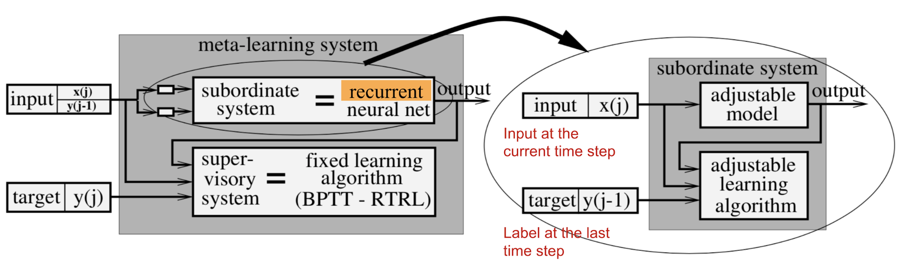
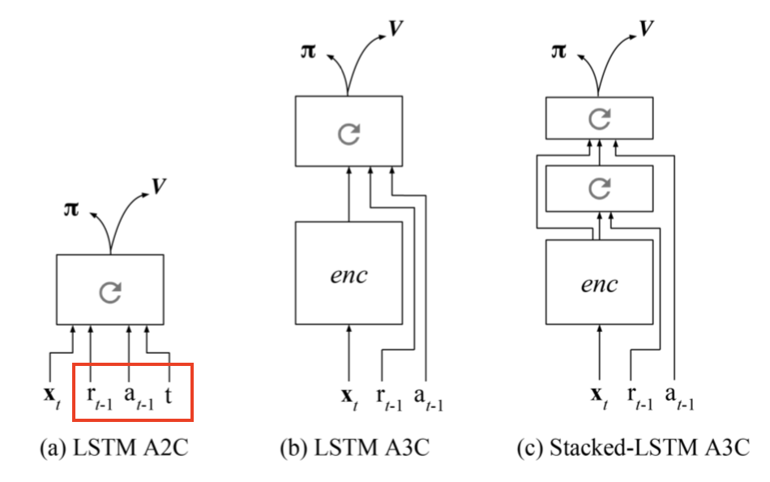
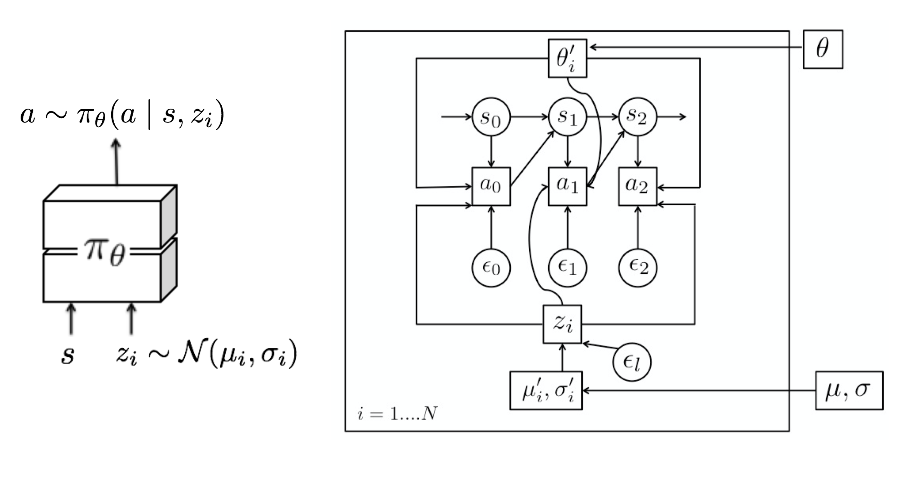
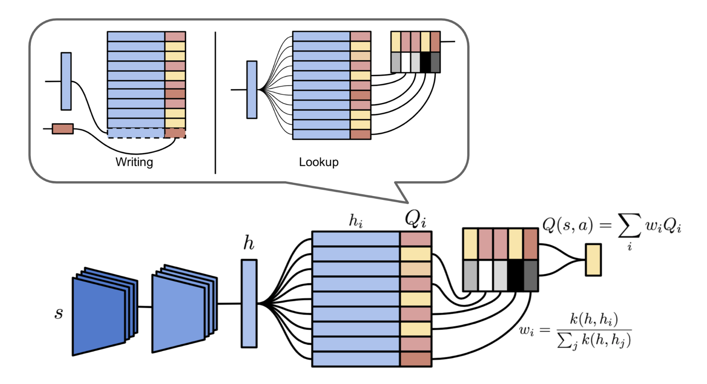
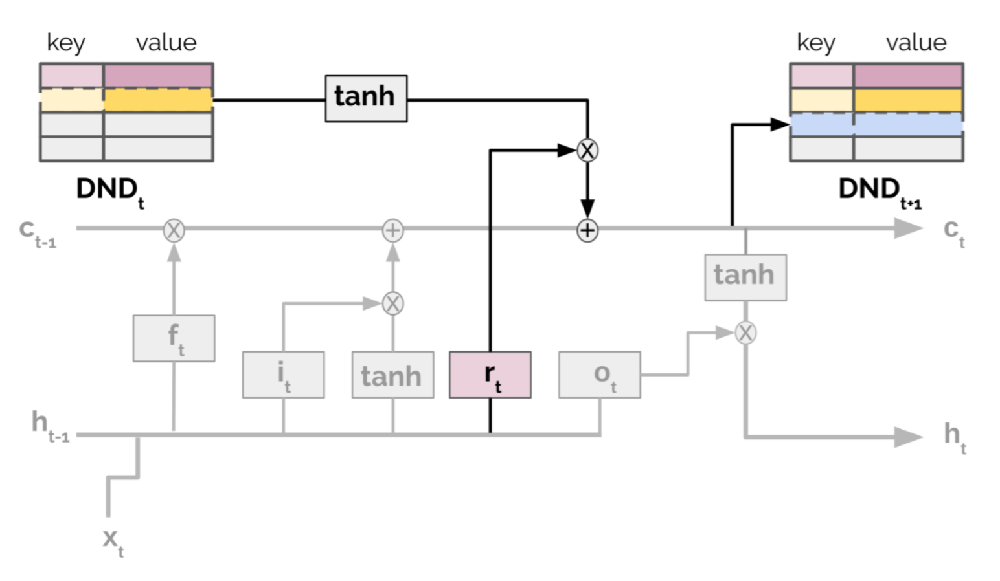
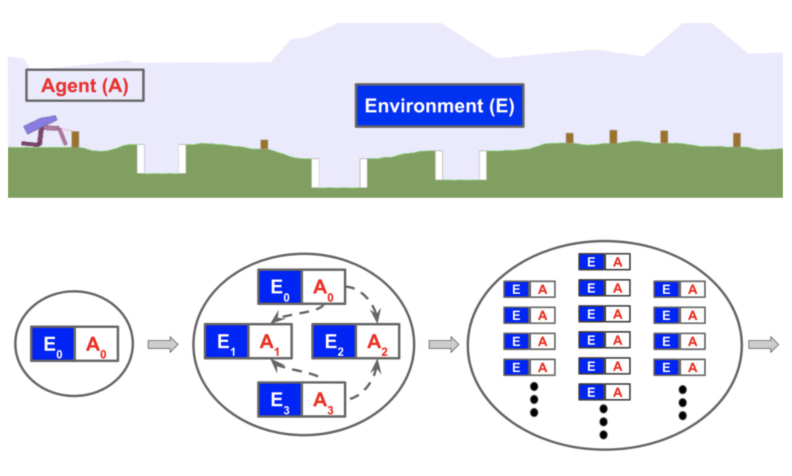
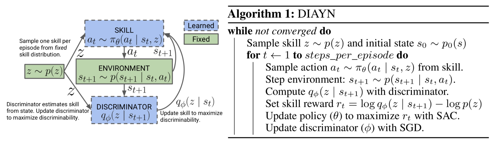

目录
元强化学习（Meta-RL）就是在强化学习任务上进行元学习。在一系列任务分布上训练后，智能体能够通过其内部活动动态发展出新的强化学习算法，从而解决全新任务。本文首先介绍元强化学习的起源，随后深入探讨其三个关键组成部分。
在我之前关于元学习：学会快速学习的文章中，问题主要定义在少样本分类的背景下。这里我想进一步探讨当我们尝试通过开发一个能够快速高效解决未见过任务的智能体，来“元学习”强化学习漫谈任务的情况。
回顾一下，一个优秀的元学习模型应能泛化到训练过程中从未遇到的全新任务或新环境。这种适应过程本质上是一次小型学习会话，在测试时仅通过有限的接触新配置即可完成。即使没有任何显式微调（不对可训练变量进行梯度反向传播），元学习模型也能自主调整内部隐藏状态来实现学习。
训练强化学习算法有时非常困难。如果元学习智能体能够变得足够聪明，使得可解决的未见过任务的分布变得极为广泛，我们就朝着通用方法迈进——本质上是构建一个“大脑”，能够在几乎没有人类干预或手动特征工程的情况下解决各种强化学习问题。听起来很棒，对吧？💖
元强化学习的起源#
2001 年的工作#
在阅读Wang et al., 2016时，我偶然发现了一篇2001年由Hochreiter et al.撰写的论文。虽然该思想最初是为监督学习提出的，但与当前的元强化学习方法有诸多相似之处。

Hochreiter的元学习模型是一个带LSTM单元的循环网络。LSTM是一个很好的选择，因为它能够内化输入历史，并通过BPTT有效地调整自身权重。训练数据包含K个序列，每个序列由目标函数f_k(.), k=1, \dots, K生成的N个样本组成，
需要注意的是，最后一个标签\mathbf{y}^k_{i-1}也会作为辅助输入提供，以便模型能够学习所呈现的映射关系。
在解码二维二次函数a x_1^2 + b x_2^2 + c x_1 x_2 + d x_1 + e x_2 + f的实验中，其系数a-f从[-1, 1]区间随机采样，该元学习系统仅在看到约35个样本后就能逼近该函数。
2016 年的提案#
在深度学习的现代时期，Wang et al.（2016）和Duan et al.（2017）同时提出了非常相似的元强化学习思想（后一篇论文中称之为RL^2）。元强化学习模型在MDP分布上进行训练，在测试时能够快速学会解决新任务。元强化学习的目标雄心勃勃，向通用算法又迈进了一步。
元强化学习的定义#
元强化学习（Meta Reinforcement Learning），简而言之，就是在强化学习漫谈领域中进行元学习：学会快速学习。通常训练任务和测试任务不同，但来自同一问题家族；例如，论文中的实验包括具有不同奖励概率的多臂老虎机、具有不同布局的迷宫、相同机器人但在模拟器中具有不同物理参数的情况，以及许多其他例子。
形式化表述#
假设我们有一个任务分布，每个任务被形式化为一个强化学习漫谈（Markov Decision Process），记为M_i \in \mathcal{M}。一个MDP由四元组M_i= \langle \mathcal{S}, \mathcal{A}, P_i, R_i \rangle确定：
| Symbol | Meaning |
|---|---|
| \mathcal{S} | A set of states. |
| \mathcal{A} | A set of actions. |
| P_i: \mathcal{S} \times \mathcal{A} \times \mathcal{S} \to \mathbb{R}_{+} | Transition probability function. |
| R_i: \mathcal{S} \times \mathcal{A} \to \mathbb{R} | Reward function. |
（RL^2论文在MDP元组中额外加入了 horizon 参数T，以强调每个MDP都应具有有限时限。）
注意上面使用了共同的状态空间\mathcal{S}和动作空间\mathcal{A}，这样（随机）策略\pi_\theta: \mathcal{S} \times \mathcal{A} \to \mathbb{R}_{+}在不同任务间可以获得兼容的输入。测试任务从相同的分布\mathcal{M}或稍作修改的版本中采样。

与传统强化学习的主要区别#
元强化学习的整体配置与普通强化学习算法非常相似，不同之处在于策略的观测除了当前状态s_t之外，还融入了上一个奖励r_{t-1}和上一个动作a_{t-1}。
这种设计的目的在于向模型输入一段历史，以便策略能够内化当前MDP中状态、奖励和动作之间的动态，并相应地调整其策略。这与Hochreiter系统中的设置高度一致。Meta-RL和RL^2都实现了基于LSTM的策略，LSTM的隐藏状态充当跟踪轨迹特征的记忆。由于策略是循环的，因此无需显式地将上一个状态作为输入提供。
训练过程如下：


关键组成部分#
元强化学习中有三个关键组成部分：
⭐ 具有记忆的模型 循环神经网络维护一个隐藏状态。因此，它能够在 rollout 过程中通过更新隐藏状态来获取并记忆关于当前任务的知识。如果没有记忆，元强化学习将无法工作。
⭐ 元学习算法 元学习算法指的是我们如何更新模型权重，以优化在测试时快速解决未见过任务的目标。在Meta-RL和RL^2论文中，元学习算法都是在MDP切换之间重置隐藏状态的普通LSTM梯度下降更新。
⭐ MDP分布 智能体在训练期间会接触各种各样的环境和任务，它必须学会如何适应不同的MDP。
根据Botvinick et al.（2019）的观点，强化学习训练缓慢的一个原因是归纳偏置（inductive bias）较弱（即“学习器根据未遇到的输入预测输出时所使用的一组假设”）。作为一般的机器学习规律，归纳偏置较弱的学习算法能够掌握更大范围的变化，但通常样本效率较低。因此，用更强的归纳偏置来缩小假设范围有助于提高学习速度。
在元强化学习中，我们从任务分布中施加某些类型的归纳偏置并将其存储在记忆中。在测试时采用哪种归纳偏置取决于算法。这三个关键组成部分共同描绘了元强化学习的一个引人注目的图景：调整循环网络的权重虽然缓慢，但它允许模型通过其内部活动动态中实现的自身强化学习算法，快速解决新任务。
元强化学习有趣且并不令人意外地与Jeff Clune（2019）提出的AI-GAs（“AI-Generating Algorithms”）论文中的思想相吻合。他提出，构建通用人工智能的一种高效方式是使学习尽可能自动化。AI-GAs方法包含三个支柱：（1）元学习架构，（2）元学习算法，以及（3）为有效学习自动生成的环境。
设计良好循环网络架构的话题过于宽泛，此处不再展开。下面我们进一步探讨另外两个组成部分：在元强化学习背景下的元学习算法，以及如何获取多样化的训练MDP。
用于元强化学习的元学习算法#
我之前关于元学习的元学习：学会快速学习已经涵盖了几种经典的元学习算法。这里我将补充更多与强化学习相关的算法。
优化模型权重以实现元学习#
MAML（Finn, et al. 2017）和Reptile（Nichol et al., 2018）都是通过更新模型参数来在新任务上获得良好泛化性能的方法。请参阅之前关于MAML和Reptile的元学习：学会快速学习文章。
元学习超参数#
强化学习问题中的强化学习漫谈函数G_t^{(n)}或G_t^\lambda，涉及几个通常凭经验设置的超参数，例如折扣因子强化学习漫谈}}和自举参数强化学习漫谈}}。 Meta-gradient RL（Xu et al., 2018）将它们视为元参数\eta=\{\gamma, \lambda \}，可以在智能体与环境交互的同时在线调整和学习。因此，返回值成为\eta的函数，并随时间动态适应特定任务。
在训练期间，我们希望使用包含所有可用信息的梯度来更新策略参数\theta’ = \theta + f(\tau, \theta, \eta)，其中\theta是当前模型权重，\tau是一系列轨迹，\eta是元参数。
同时，假设我们有一个作为性能度量的元目标函数J(\tau, \theta, \eta)。训练过程遵循在线交叉验证的原则，使用一系列连续的经验：
其中\beta是\eta的学习率。
Meta-gradient RL算法通过将二阶梯度项设为零（\mathbf{I} + \partial g(\tau, \theta, \eta)/\partial\theta = 0）来简化计算——这种选择更倾向于元参数\eta对参数\theta的直接影响。最终我们得到：
论文中的实验采用与TD(\lambda)算法相同的元目标函数，即最小化近似价值函数v_\theta(s)与\lambda-return之间的误差：
元学习损失函数#
在策略梯度算法中，通过沿估计梯度方向更新策略参数\theta来最大化期望总奖励（Schulman et al., 2016），
其中\Psi_t的候选包括轨迹回报G_t、Q值Q(s_t, a_t)或优势值A(s_t, a_t)。对应的策略梯度代理损失函数可以反向推导得出：
该损失函数是对轨迹历史(s_0, a_0, r_0, \dots, s_t, a_t, r_t, \dots)的度量。Evolved Policy Gradient（EPG；Houthooft, et al, 2018）进一步将策略梯度损失函数定义为对智能体过去经验L_\phi的时间卷积（一维卷积）。损失函数网络的参数\phi通过进化方式更新，使得智能体能够获得更高的回报。
与许多元学习算法类似，EPG具有两个优化循环：
基本思想是训练一群N个智能体，每个智能体都使用参数为\phi并叠加标准差为\sigma的小高斯噪声\epsilon_i \sim \mathcal{N}(0, \mathbf{I})的损失函数L_{\phi + \sigma \epsilon_i}进行训练。在内循环训练过程中，EPG跟踪经验历史，并根据每个智能体的损失函数L_{\phi + \sigma\epsilon_i}更新策略参数：
其中\alpha_\text{in}是内循环的学习率，\tau_{t-K, \dots, t}是直到当前时间步t的M个转移序列。
一旦内循环策略足够成熟，就通过在多个随机采样轨迹上的平均回报\bar{G}_{\phi+\sigma\epsilon_i}来评估策略。最终，我们能够根据NES数值估计\phi的梯度（Salimans et al, 2017）。在重复此过程的同时，策略参数\theta和损失函数权重\phi同时被更新以获得更高的回报。
其中\alpha_\text{out}是外循环的学习率。
在实践中，损失L_\phi会用普通策略梯度（例如REINFORCE或PPO）的代理损失L_\text{pg}、\hat{L} = (1-\alpha) L_\phi + \alpha L_\text{pg}进行自举。权重\alpha在训练过程中从1逐渐退火到0。在测试时，损失函数参数\phi保持固定，损失值根据经验历史计算来更新策略参数\theta。
元学习探索策略#
多臂老虎机问题及其解决方案困境是强化学习中的关键问题。常见的探索方式包括\epsilon-greedy、在动作上添加随机噪声，或在动作空间上具有内在随机性的随机策略。
MAESN（Gupta et al, 2018）是一种从先验经验中学习结构化动作噪声的算法，以实现更好、更有效的探索。简单地在动作上添加随机噪声无法捕捉依赖于任务或时间相关的探索策略。MAESN将策略修改为依赖于每个任务的随机变量z_i \sim \mathcal{N}(\mu_i, \sigma_i)，对于第i个任务M_i，我们得到策略a \sim \pi_\theta(a\mid s, z_i)。 潜在变量z_i在每个episode中采样一次并固定。直观上，潜在变量决定了一种在rollout开始时应更多探索的行为类型（或技能），智能体将据此调整其动作。策略参数和潜在空间都被优化以最大化任务总奖励。同时，策略学会利用潜在变量进行探索。
此外，损失函数包含学习到的潜在变量与单位高斯先验D_\text{KL}(\mathcal{N}(\mu_i, \sigma_i)|\mathcal{N}(0, \mathbf{I}))之间的KL散度。一方面，它限制了学习到的潜在空间不会偏离共同先验太远；另一方面，它为奖励函数创建了变分证据下界（ELBO）。有趣的是，论文发现每个任务的(\mu_i, \sigma_i)在收敛时通常接近先验。

情景控制#
对强化学习的主要批评之一是其样本效率低下。强化学习需要大量样本和较小的学习步长来进行增量参数调整，以最大化泛化并避免灾难性遗忘先前学到的知识（Botvinick et al., 2019）。
情景控制（Lengyel & Dayan, 2008）被提出作为避免遗忘、提高泛化并加速训练的解决方案。它部分受到基于实例的hippocampal学习假说的启发。
情景记忆会明确记录过去的事件，并直接使用这些记录作为做出新决策的参考（即类似于元学习：学会快速学习元学习）。在MFEC（Model-Free Episodic Control；Blundell et al., 2016）中，记忆被建模为一个大表，将状态-动作对(s, a)作为键，对应的Q值Q_\text{EC}(s, a)作为值。当接收到新的观测s时，Q值以非参数方式估计为最相似的前k个样本的Q值平均值：
其中s^{(i)}, i=1, \dots, k是与状态s距离最小的前k个状态。然后选择产生最高估计Q值的动作。随后根据在s_t处收到的回报更新记忆表：
作为一种表格型强化学习方法，MFEC存在内存消耗大以及难以在相似状态间泛化的问题。前者可以通过LRU缓存解决。受元学习：学会快速学习元学习（尤其是Matching Networks，Vinyals et al., 2016）的启发，后续算法NEC（Neural Episodic Control；Pritzel et al., 2016）改善了泛化问题。
NEC中的情景记忆是一个可微神经字典（Differentiable Neural Dictionary, DND），其中键是输入图像像素的卷积嵌入向量，值存储估计的Q值。给定查询键，输出是字典中最相似键对应值的加权和，权重是查询键与选中键之间的归一化核度量。这听起来像是一种硬注意力？注意力！机制。

进一步地，Episodic LSTM（Ritter et al., 2018）通过DND情景记忆增强了基本的LSTM架构，它将任务上下文嵌入作为键，将LSTM单元状态作为值。存储的隐藏状态通过LSTM内部相同的门控机制被检索并直接加到当前单元状态上：

其中\mathbf{c}_t和\mathbf{h}_t是时间t的隐藏状态和单元状态；\mathbf{i}_t、\mathbf{f}_t和\mathbf{r}_t分别是输入门、遗忘门和重置门；\mathbf{c}_\text{ep}是从情景记忆中检索到的单元状态。新增加的情景记忆组件以绿色标记。
这种架构通过基于上下文的检索为先验经验提供了一条捷径。同时，将任务相关的经验显式保存在外部记忆中避免了遗忘。在论文中，所有实验都使用了手动设计的情景向量。如何为更自由形式的任务构建有效且高效的任务上下文嵌入格式，将是一个有趣的话题。
总体而言，情景控制的能力受环境复杂性限制。在现实任务中，智能体很少会重复访问完全相同的状态，因此对状态进行适当编码至关重要。学习到的嵌入空间将观测数据压缩到低维空间，同时在这个空间中接近的两个状态被期望需要相似的策略。
训练任务的获取#
在三个关键组成部分中，如何设计适当的任务分布是研究较少、且可能是对元强化学习本身最特定的一项。如上所述，每个任务都是一个MDP：M_i = \langle \mathcal{S}, \mathcal{A}, P_i, R_i \rangle \in \mathcal{M}。我们可以通过修改以下内容来构建MDP分布：
通过领域随机化生成任务#
在模拟器中随机化参数是一种获取具有修改后转移函数任务的简单方法。如果想进一步了解，请查看我上一篇关于领域随机化的域随机化用于 Sim2Real 转移。
基于进化算法的环境生成#
Evolutionary algorithm是一种无梯度的启发式优化方法，受到自然选择的启发。一个种群的解遵循评估、选择、繁殖和变异的循环。最终，好的解得以存活并被选择。
POET（Wang et al, 2019）是一个基于进化算法的框架，尝试在解决问题本身的同时生成任务。POET的实现仅针对一个简单的2Dbipedal walker环境，但指出了一个有趣的方向。值得注意的是，进化算法已经在深度学习中有了令人信服的应用，例如EPG和PBT（Population-Based Training；Jaderberg et al, 2017）。

2D双足行走环境正在进化：从简单的平坦表面发展到具有潜在间隙、树桩和崎岖地形的更困难路径。POET将环境挑战的生成与智能体的优化配对，以便（a）选择能够解决当前挑战的智能体，以及（b）进化出可解的环境。该算法维护一个环境-智能体对列表，并重复以下步骤：
上述过程与PBT非常相似，但PBT是变异和进化超参数。某种程度上，POET正在进行域随机化用于 Sim2Real 转移，因为所有间隙、树桩和地形粗糙度都由一些随机化概率参数控制。与DR不同的是，智能体并非一次性暴露于完全随机的困难环境，而是通过进化算法配置的课程逐步学习。
使用随机奖励进行学习#
没有奖励函数R的MDP被称为受控马尔可夫过程（Controlled Markov process, CMP）。给定一个预定义的CMP\langle \mathcal{S}, \mathcal{A}, P\rangle，我们可以通过生成一系列奖励函数\mathcal{R}来获得各种任务，这些奖励函数鼓励训练有效的元学习策略。
Gupta et al. (2018)提出了两种无监督方法，用于在CMP背景下扩展任务分布。假设每个任务都有一个潜在的潜在变量z \sim p(z)，它参数化/决定了一个奖励函数：r_z(s) = \log D(z|s)，其中使用“判别器”函数D(.)从状态中提取潜在变量。论文描述了两种构建判别器函数的方式：
DIAYN（“Diversity is all you need”的缩写）是一个在没有奖励函数的情况下鼓励策略学习有用技能的框架。它将潜在变量z显式建模为技能嵌入，并使策略除了状态s之外还依赖于z（\pi_\theta(a \mid s, z)）。（好吧，这部分与MAESN相同并不奇怪，因为这些论文来自同一组。）DIAYN的设计受到以下几个假设的启发：
要最大化的目标函数如下，其中还加入了策略熵以鼓励多样性：
其中I(.)是互信息，H[.]是熵度量。我们无法对所有状态进行积分来计算p(z \mid s)，因此用D_\phi(z \mid s)来近似——这就是多样性驱动的判别器函数。

一旦判别器函数被学习到，采样新的MDP用于训练就很简单了：首先采样一个潜在变量z \sim p(z)并构造奖励函数r_z(s) = \log(D(z \vert s))。将奖励函数与预定义的CMP配对就创建了一个新的MDP。
--- 迄今为止，元强化学习的实验仍局限于一组非常相似的任务，这些任务来自同一家族；例如具有不同奖励概率的多臂老虎机、具有不同布局的迷宫，或相同机器人但在模拟器中具有不同物理参数的情况。我期待看到更多研究展示元强化学习在更多样化任务集合上的强大能力。
引用格式：
@article{weng2019metaRL,
title = "Meta Reinforcement Learning",
author = "Weng, Lilian",
journal = "lilianweng.github.io",
year = "2019",
url = "https://lilianweng.github.io/posts/2019-06-23-meta-rl/"
}
参考文献#
[1] Richard S. Sutton. “The Bitter Lesson.” March 13, 2019.
[2] Sepp Hochreiter, A. Steven Younger, and Peter R. Conwell. “Learning to learn using gradient descent.” Intl. Conf. on Artificial Neural Networks. 2001.
[3] Jane X Wang, et al. “Learning to reinforcement learn.” arXiv preprint arXiv:1611.05763 (2016).
[4] Yan Duan, et al. “RL <span class="math-inline" data-math="^ 2">^ 2</span>: Fast Reinforcement Learning via Slow Reinforcement Learning.” ICLR 2017.
[5] Matthew Botvinick, et al. “Reinforcement Learning, Fast and Slow” Cell Review, Volume 23, Issue 5, P408-422, May 01, 2019.
[6] Jeff Clune. “AI-GAs: AI-generating algorithms, an alternate paradigm for producing general artificial intelligence” arXiv preprint arXiv:1905.10985 (2019).
[7] Zhongwen Xu, et al. “Meta-Gradient Reinforcement Learning” NIPS 2018.
[8] Rein Houthooft, et al. “Evolved Policy Gradients.” NIPS 2018.
[9] Tim Salimans, et al. “Evolution strategies as a scalable alternative to reinforcement learning.” arXiv preprint arXiv:1703.03864 (2017).
[10] Abhishek Gupta, et al. “Meta-Reinforcement Learning of Structured Exploration Strategies.” NIPS 2018.
[11] Alexander Pritzel, et al. “Neural episodic control.” Proc. Intl. Conf. on Machine Learning, Volume 70, 2017.
[12] Charles Blundell, et al. “Model-free episodic control.” arXiv preprint arXiv:1606.04460 (2016).
[13] Samuel Ritter, et al. “Been there, done that: Meta-learning with episodic recall.” ICML, 2018.
[14] Rui Wang et al. “Paired Open-Ended Trailblazer (POET): Endlessly Generating Increasingly Complex and Diverse Learning Environments and Their Solutions” arXiv preprint arXiv:1901.01753 (2019).
[15] Uber Engineering Blog: “POET: Endlessly Generating Increasingly Complex and Diverse Learning Environments and their Solutions through the Paired Open-Ended Trailblazer.” Jan 8, 2019.
[16] Abhishek Gupta, et al.“Unsupervised meta-learning for Reinforcement Learning” arXiv preprint arXiv:1806.04640 (2018).
[17] Eysenbach, Benjamin, et al. “Diversity is all you need: Learning skills without a reward function.” ICLR 2019.
[18] Max Jaderberg, et al. “Population Based Training of Neural Networks.” arXiv preprint arXiv:1711.09846 (2017).